双轴（分层）是一种包含相互叠放的两组地理数据的地图，通常，我会用一层用来显示区域，一层用来显示具体的点位。其中，区域层还可以通过颜色区分不同行政区域。
最终呈现的结果如下：
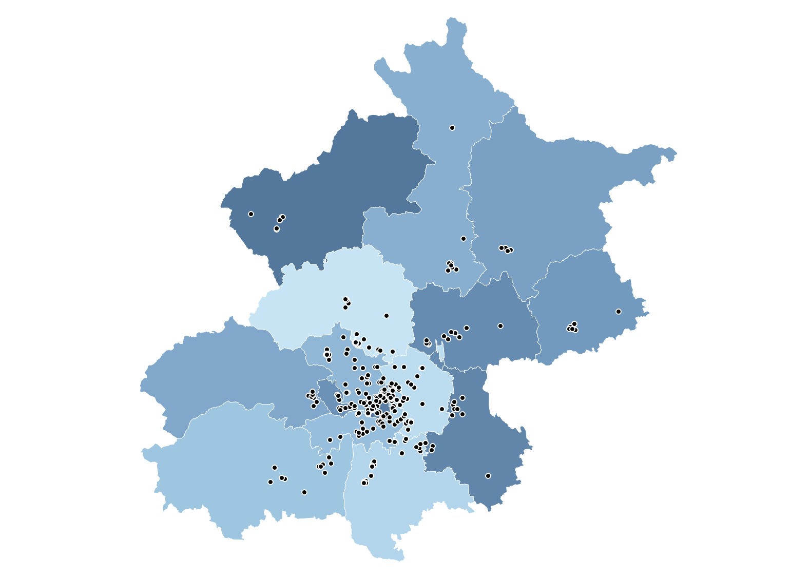
数据准备
为了创建含行政区域的双轴地图，我们需要至少两个信息：
1.含经纬度的地图数据，以下是北京新冠检测机构的名称和地址
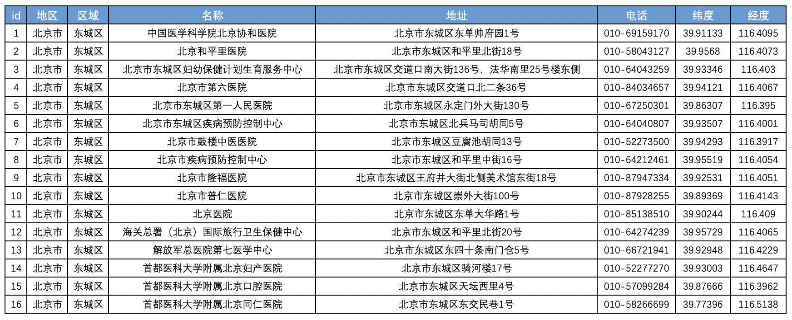
2.含城区信息的geojson类型空间文件，可通过阿里云的数据可视化平台进行下载
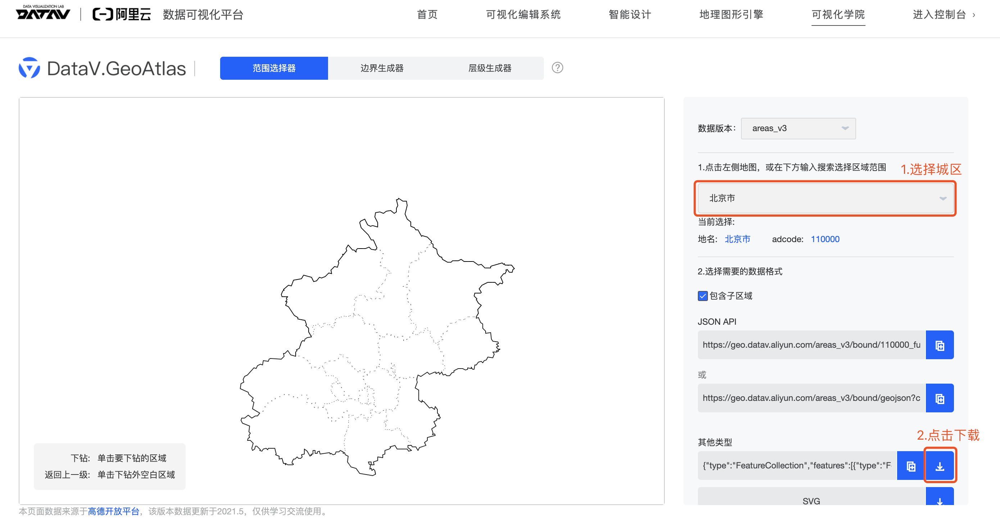
将两个数据源进行连接，这里选择的是右连接：
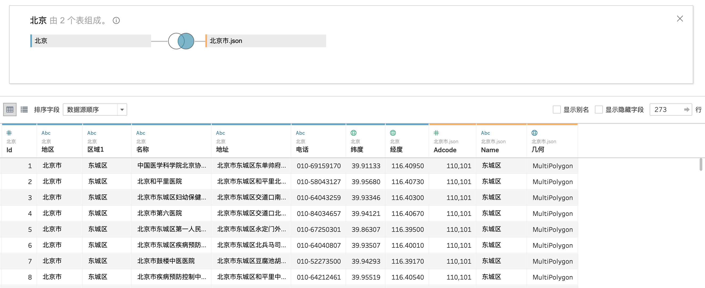
创建双轴地图
首先将经纬度字段修改地理角色为对应的“经度”和“纬度”
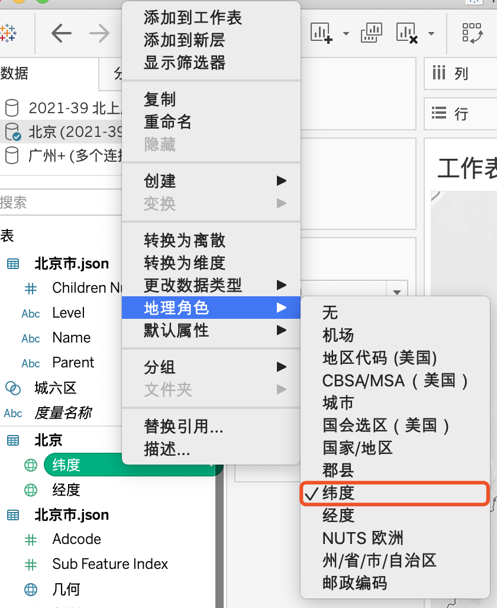
将列表中的经度、纬度分别拖放到列和行，在列和行上，分别右键单击胶囊，选择“维度”。
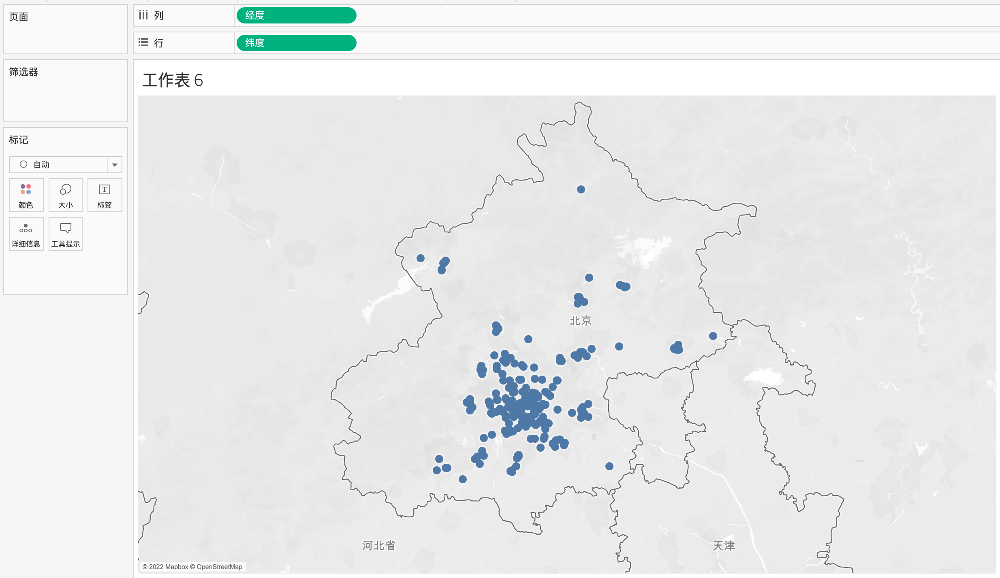
按住ctrl，复制纬度，这时标记选项卡下出现latitude和latitude(2)。
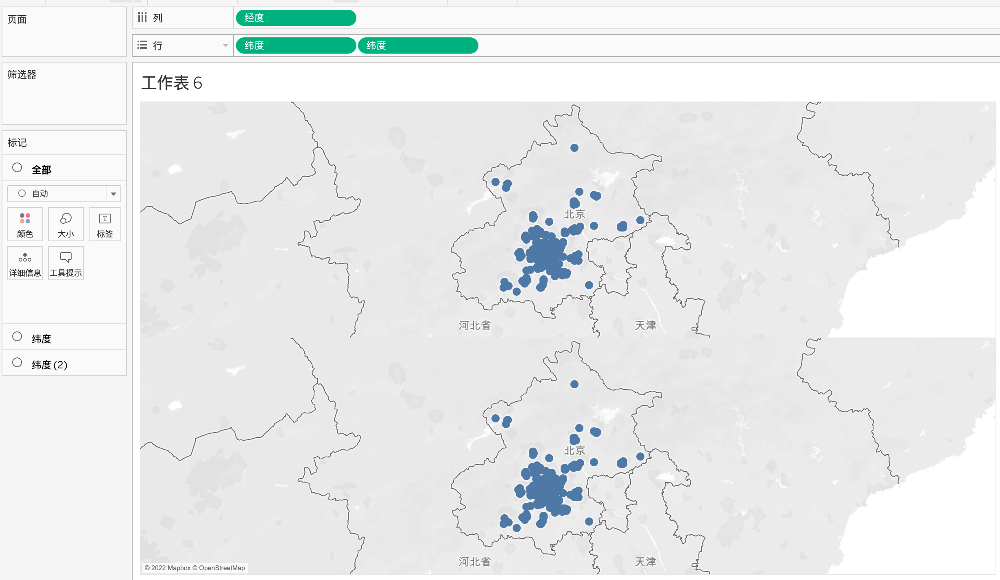
选择左侧“纬度”标签，将其类型改为“地图”，将geojson标签下的“几何” 拖放到“详细信息”，此时该层地图中相关行政区被着色。
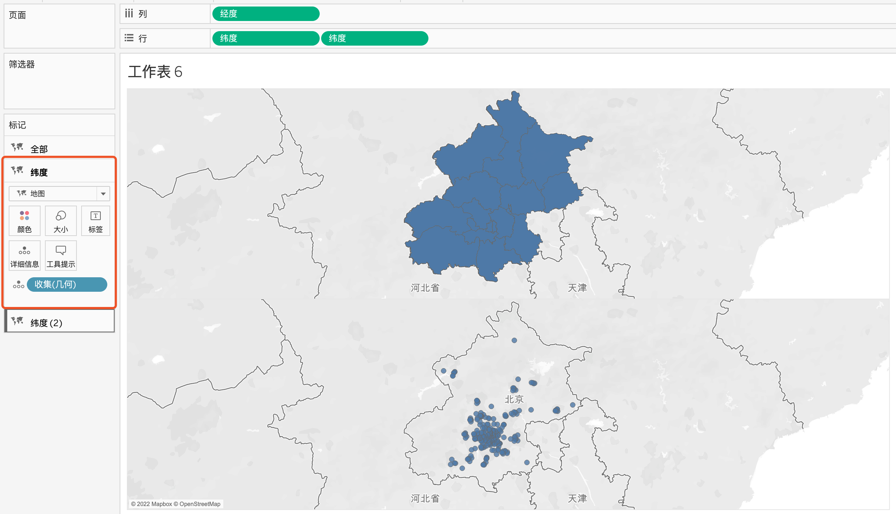
在绿色胶囊上右键，选择“双轴”，将两个地图层叠加。
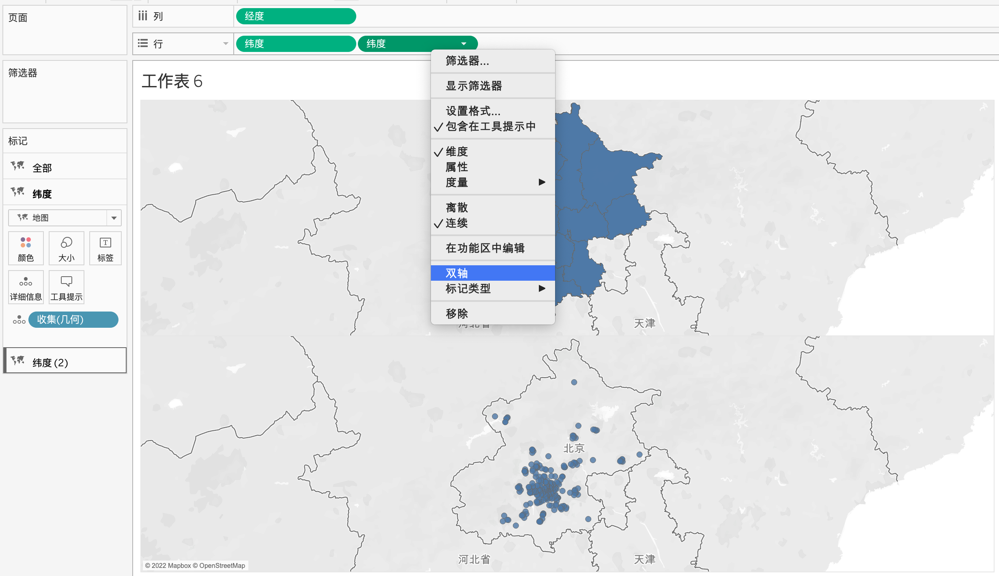
将点位的颜色设为黑色白边，此时点位就在地图上凸显出来，双层地图完成。
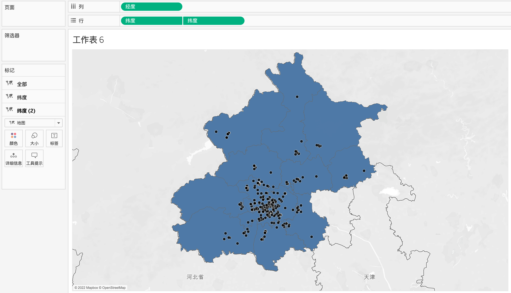
最后将格式进行美化。在顶部菜单栏选择“地图”-“地图层”，将所有底图勾选去掉，得到干净的底图。将区域拖入“纬度”标签的“颜色”即可。
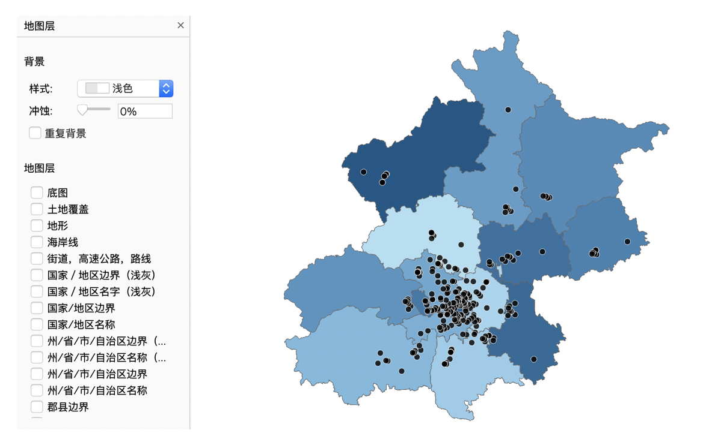